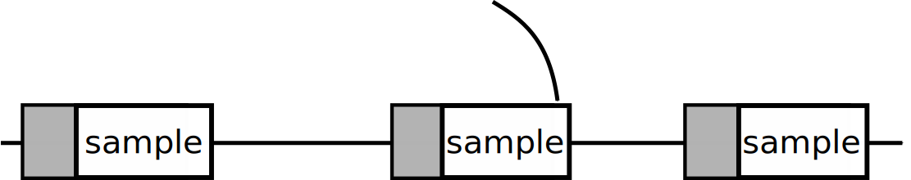
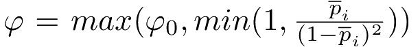
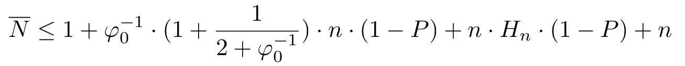
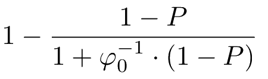
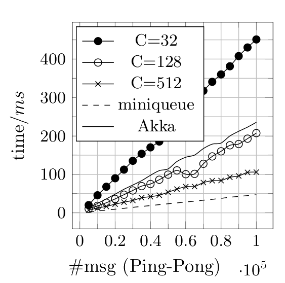
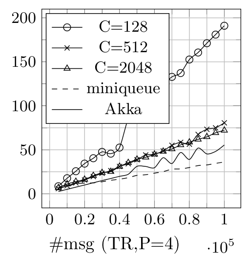
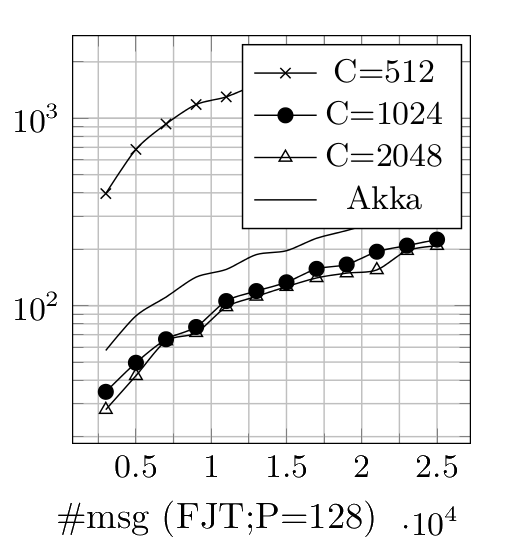
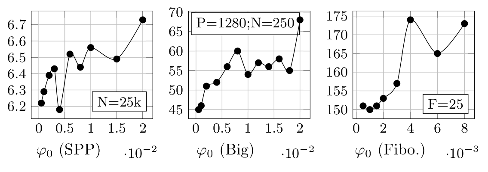

Accelerating by Idling
How Speculative Delays Improve Performance of Message-Oriented Systems
 Aleksandar Prokopec
Aleksandar Prokopec
Can the performance of a message-oriented system be improved by adding idle execution to actors?
Spinning before a context switch potentially improves performance.
But not always.
1. When should an actor spin?
2. How long should an actor spin?
d (delay) < c (context switch)
How to pick a delay in <0, c>?
Sample the probability P that a message arrives after the delay d.
The actor also needs to spend some time sampling, to figure out what the probability P is.
We will assume that the actor samples with some probability φ.


Conclusion: given a probability p that a message arrives after δ, an actor should delay the context switch if:
δ < p
Speculative idling
Obtain M pairs δi, pi, and pick the pair with the minimal δi - pi. If this pair is positive, wait δi time before context switching.
Delay sampling
Before the context switch, with a probability φ << 1, wait for the duration of the context switch, and record the times δi when a message arrived.
After collecting N samples, group the delay times into M buckets, and report the pairs δi, pi.
Sample size N?
For 95% confidence that the sampled probability P lies within 15% of its true value, we need N = 43.
For a sampling probability φ = 0.01, the expected number of activations per actor is ~4300.
But, actors are short-lived.
In many applications, most actors are not activated 4300 times.
How to obtain a sample more quickly?
Greedy sampling
Always set the sampling frequency φ to a value proportionate to the currently estimated probability.
Intuition: If the message arrival probability P is high, then more frequent sampling is not detrimental.
I.e. an actor spends more time sampling, but it is likely that messages will arrive during sampling, saving a context switch.
If the message arrival probability P is low, then less frequent sampling is not detrimental.
I.e. it might take a long time to collect the sample, but it's unlikely that it will help anyway.
Greedy sampling
Initially, set the sampling frequency to some small value φ0. After each sampling, set the frequency to:

Greedy sampling
Expected number of messages before obtaining a sample:

Greedy sampling
Lower bound on speedup:

Benchmarks:
Savina Actor Suite
Constraint: speculative idling must improve performance where possible, but never decrease performance when idling does not help.



